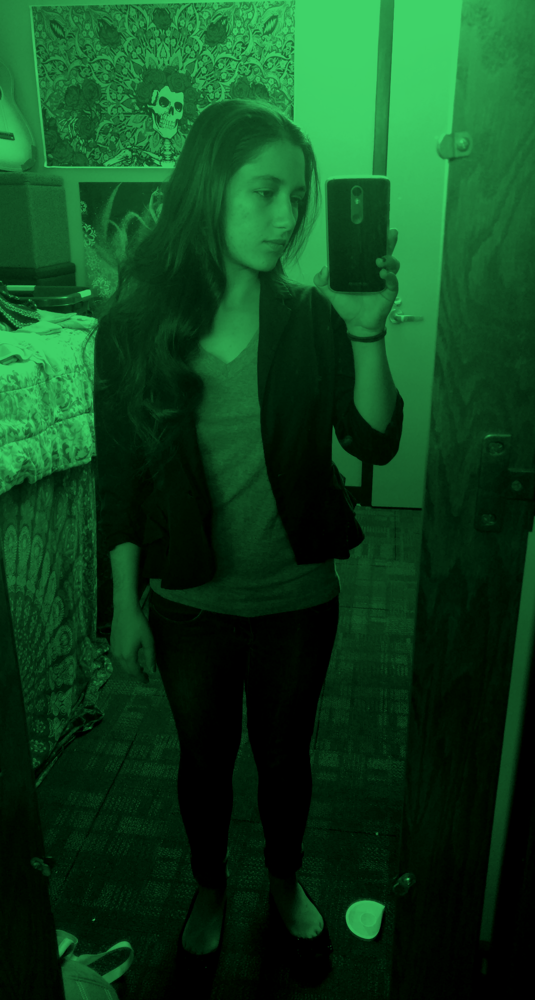
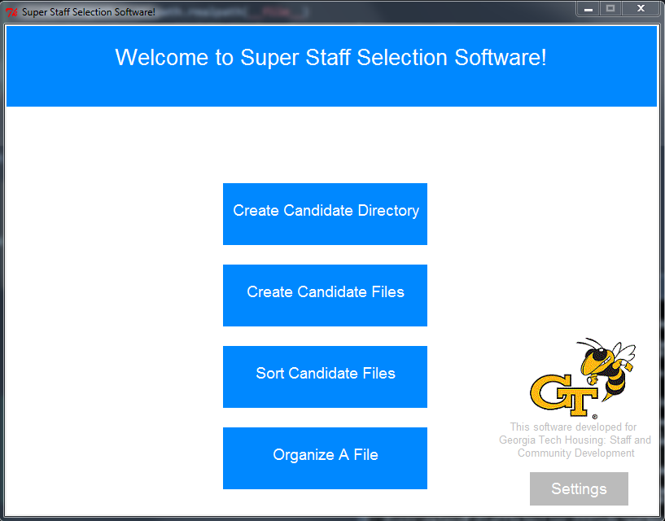
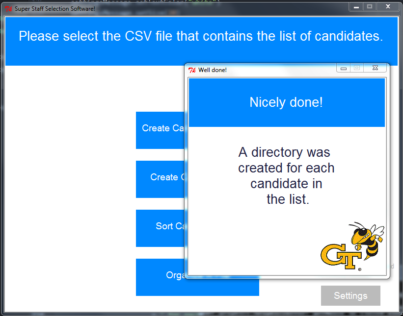
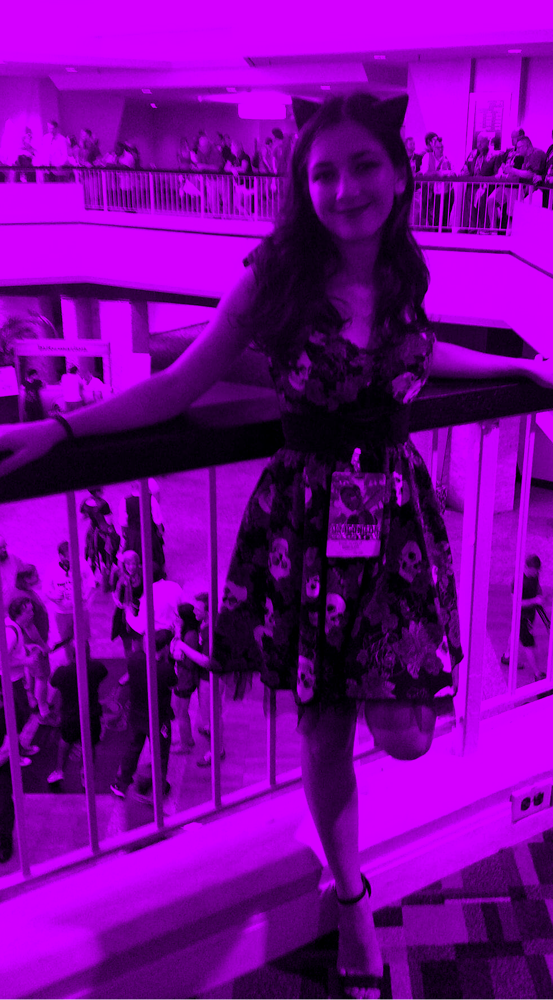
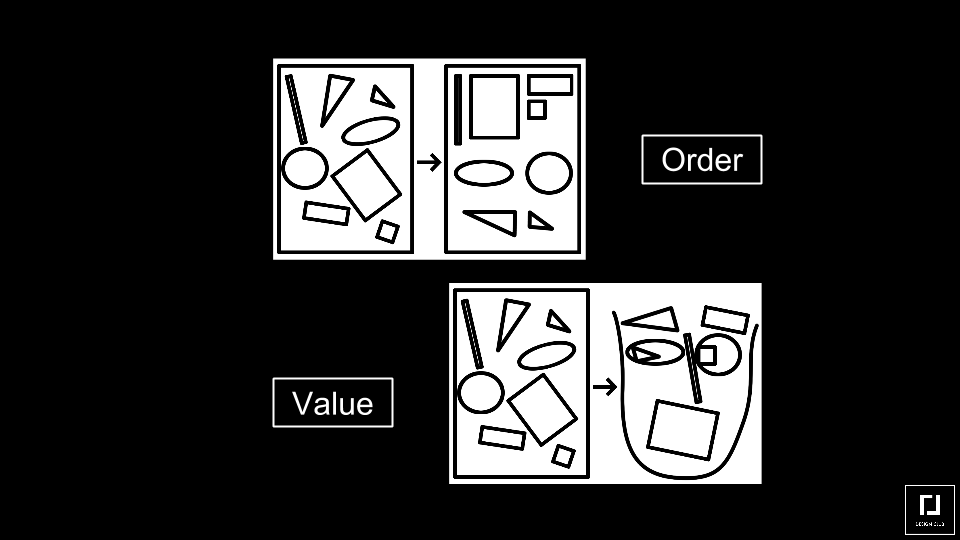

DEVELOPER
DEVELOPER
While working as an office assistant for Georgia Tech Housing, I developed a file manipulation system in Python.
This system uses regular expressions to organize hundreds of files; it decreased the amount of time necessary
to sort the files by about 50%. Special attention was given to the GUI, created with the Tkinter library.



DESIGNER
DESIGNER
I currently work as a UI/UX Designer for Georgia Tech Research Institute. My responsibilities include
developing prototypes for new applications, participating in design discussions about UI standards across
all of the applications my department develops, and creating user tests to validate the designs.

My process for designing interfaces always starts with pen and paper: writing down the known requirements, and then brainstorming lots of
different interfaces that could satisfy them.

After brainstorming several different ideas on paper, I ask classmates and friends for feedback on the design - often asking them how
they would complete a particular task given the interface depicted.
The next step depends on the scope of the project. For smaller projects, I jump right into coding, and create the HTML & CSS files needed.
The design process continues from there, and the files are used as a prototype for testing. For larger projects, I use Axure to create a medium fidelity mockup.
I then seek feedback on this mockup, and try to create at least 3 or 4 different versions.
After completing the medium-to-high fidelity mockups and testing those, I either begin implementation or hand off the mockups to a teammate, depending on the project structure.